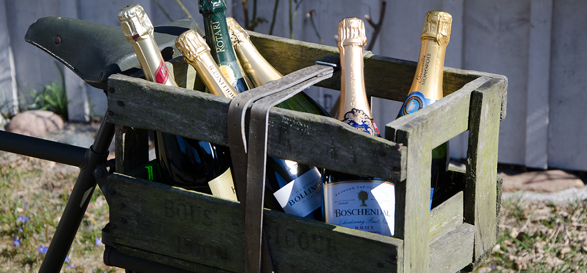

En vanlig missuppfattning är att den korta benämningen
”Moët” uttalas ”Moee”,
likt franskan, men det korrekta uttalet
är ”Moëtt” med hårt T. Detta för att Claude Moët var av nederländsk börd.
Företaget Moët & Chandon har genom åren levererat till berömdheter som
Ludvig XV, Nikolaj III och Napoleon I.

Trots att Champagne starkt förknippades med adeln och kungligheter
överlevde Champagnen den franska revolutionen. Mycket tack vare att
kejsar Napoleon var
god vän med Jean-Remy Moët (barnbarn till grundaren
Claude Moët) borgmästare i champagnestaden Épernay. Legenden säger
att Napoleon, inför ett slag, alltid tog vägen förbi Champagne för att fylla
på förråden. Endast en gång frångick han denna princip, på väg till Waterloo.
Champagnehuset Pommery har en 18 km lång källare
30 meter under marken
där 25 miljoner flaskor lagras!
Svenska kungahuset sägs föredra Pommery.
Champagne betyder öppet landskap och det är precis så regionen i nordvästra
Frankrike ser ut.